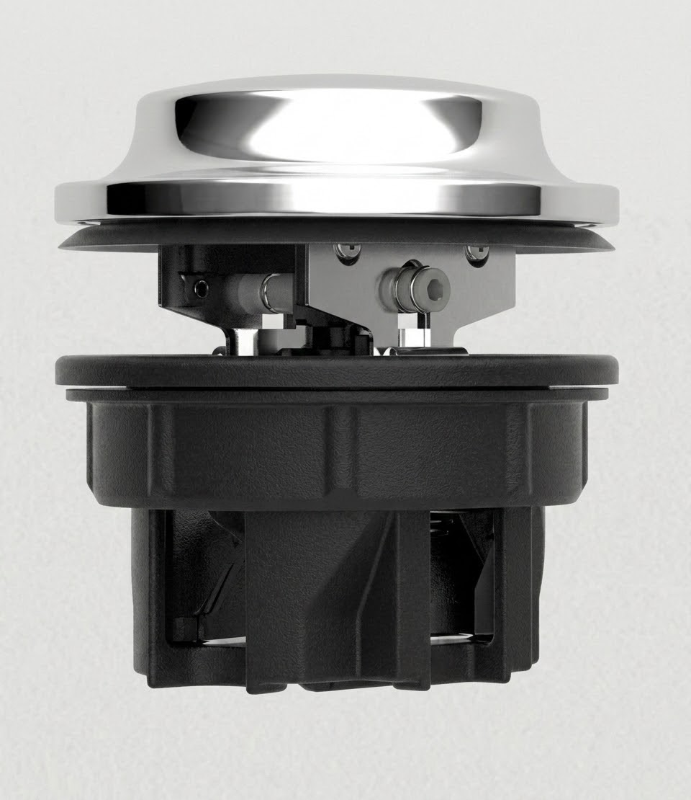
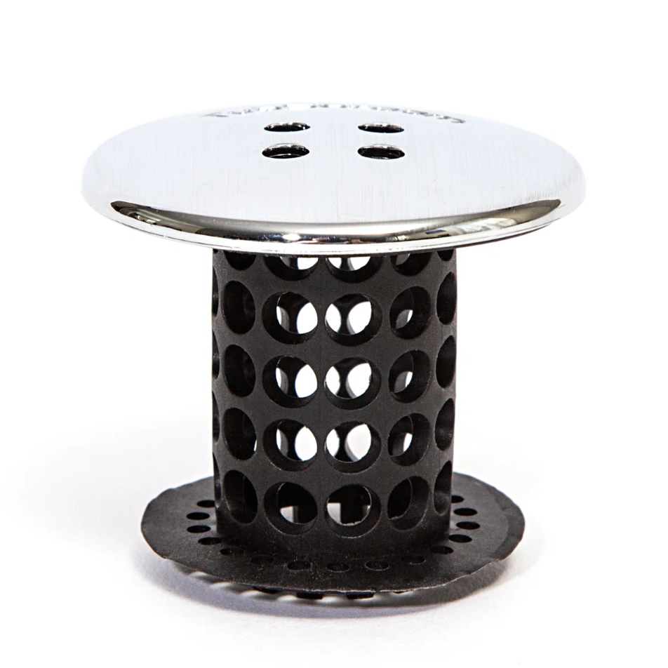
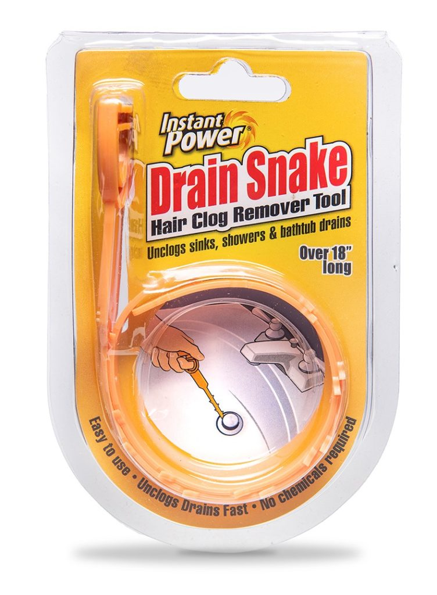
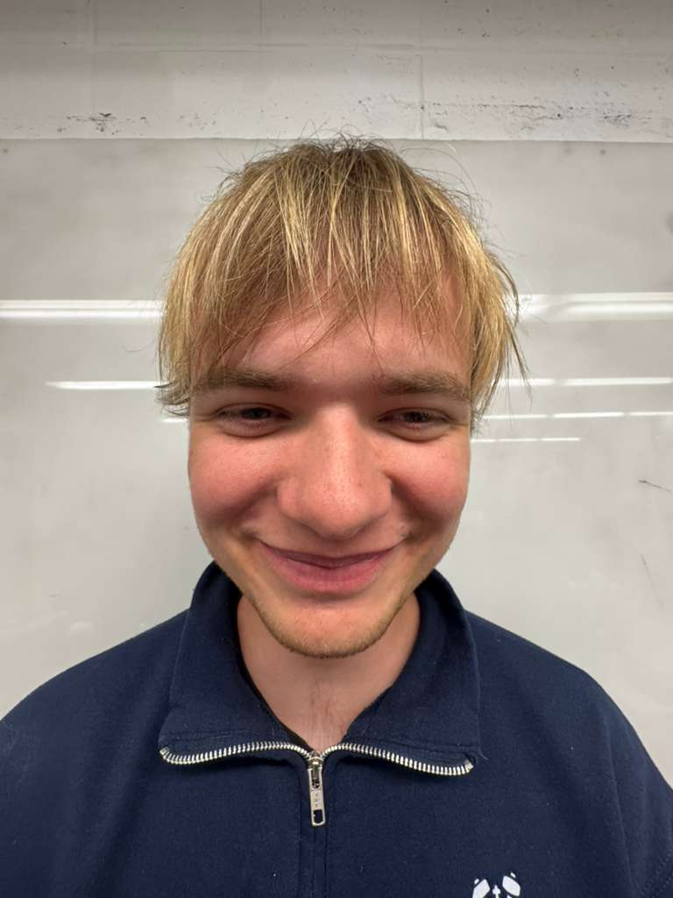
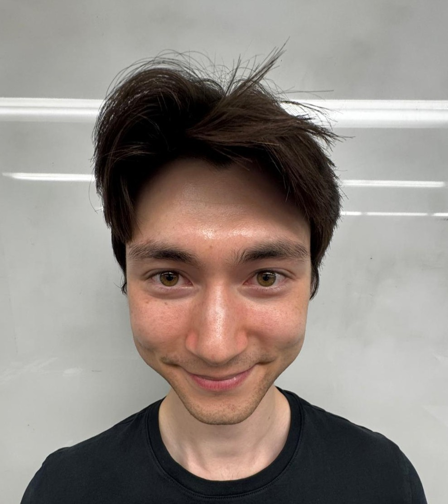

Columbia University · MECE E3430 · Senior Design · Spring 2026

MAKE SHOWERING EASIER
WITH TUBSTEP™
A hands-free, one-step hair clog prevention system for shower and bathtub drains.
Explore the DesignColumbia University · MECE E3430 · Senior Design · Spring 2026
A hands-free, one-step hair clog prevention system for shower and bathtub drains.
Explore the DesignProject Overview
TubStep™ is a precision-machined drain insert designed to eliminate hair clogs before they form — without any user contact with the hair. Step down, walk away.

TubStep™ is a drain insert that fits into any standard 1.5" bathtub drain. When a user steps on the device, body weight powers an internal rotary blade mechanism that cuts hair into small pieces — no touching required.
The device is made from ten stainless steel 303 parts, fully precision machined and assembled by hand. Installation requires no tools: drop it in, and it's ready.
Existing solutions — like TubShroom and Press Drain — either require users to handle accumulated hair, or fail to capture it at all. They shift the problem. They don't solve it.
Hair clogs are the #1 cause of residential drain blockages, affecting an estimated 40 million Americans. TubStep doesn't collect hair. It shreds it — pieces small enough to flush through the plumbing without accumulating.
Foot pressure drives a cam mechanism that converts linear motion to shaft rotation. The rotating shaft drives overlapping blades in a scissor-shear action, cutting hair at the point of entry. When you lift your foot, a return spring resets the mechanism. Water flushes the fragments down.
Prototype Description
TubStep™ is built around four core mechanical systems. Each one was designed from first principles to be reliable and from stainless steel 303 — no electronics, no chemicals, no maintenance.

When the shaft turns, the rotating blade assembly sweeps through the bottom of the tubstep where hair collects, severing it into small pieces. The blades are machined with an overlapping geometry that concentrates shear force at a precise contact line — ensuring a clean, reliable cut with every step, without pulling or tangling.

The cam shaft is the mechanical heart of TubStep™. It converts the linear downward force of a foot press into rotation at the blade shaft — a classic cam-follower mechanism adapted for the compact geometry of a drain insert. A single step produces a full shearing stroke. The cam geometry is tuned so the full rotation occurs within the natural travel range of a foot press, requiring no conscious effort from the user beyond simply stepping down.

A compression spring runs through the center of the assembly, storing energy as the user steps down and releasing it the moment pressure lifts — pushing the top back to its resting position automatically. The spring rate was selected to provide a firm, comfortable underfoot feel: enough resistance to feel solid, not so much that stepping requires noticeable effort. It resets the mechanism in under a second, leaving TubStep™ ready for the next use with no user input.

A water-resistant bearing supports the rotating shaft under the axial load of a foot press while allowing it to spin freely. Washers on either side distribute the load evenly and prevent metal-on-metal contact between rotating and stationary surfaces. Together, they ensure the blade assembly rotates smoothly with every step — even under the full weight of an adult — without binding, wear, or degradation from the wet drain environment.

All four subsystems combine into a single ten-part assembly that drops into any standard 1.5" bathtub drain — no tools, no plumbing modifications, no installation. The user steps down: the cam converts foot pressure to shaft rotation, the spring cushions the stroke, the bearing keeps everything spinning freely, and the rotating blades shear hair cleanly at the drain opening. Lift your foot, and the spring resets the whole mechanism in under a second. The complete cycle — step, cut, reset — happens faster than the shower water reaches the drain.
Literature Search & Prior Art
Hair is the #1 cause of shower and bathtub drain clogs — and every one of America's 142 million households has a drain. Unlike grease or soap scum, hair doesn't dissolve in water. It accumulates, tangles, and bonds with soap scum, forming blockages that no passive drain cover prevents and no chemical reliably dissolves.
The existing market is dominated by passive collection devices — products that trap hair and require users to periodically remove and dispose of accumulated waste or by treatments - products that remove clogs only after they have formed. These solutions shift the problem rather than solving it, and nearly all require direct contact with wet, tangled hair.
TubStep™ takes a different approach: active elimination rather than passive collection. By shredding hair at the point of entry, the problem never accumulates.
[ Competitive Analysis ]

Simple one-step actuation but was a kickstarter scam. Largely ineffective against clogging.

Captures hair effectively but requires the user to handle accumulated wet hair. High maintenance frequency — widely cited as unpleasant to clean.

A reactive tool used only after a clog has already formed. Direct contact with hair and debris — smell included.
Harsh chemical formulation applied after a clog forms. Ineffective on dense hair clogs, potentially damaging to older pipes, and a safety hazard in homes with children or pets.

Actively shreds hair at the point of entry — hands-free, foot-activated, and zero maintenance contact. Hair never accumulates. No chemicals. No handling. No clog.
Why TubStep™ Wins
Active shredding, not passive collection. Hair is eliminated at entry rather than accumulated for later removal.
Truly hands-free. Foot-activated mechanism means zero user contact with hair at any point in the process.
Validated cutting mechanism. Multi-blade rotary shear was tested via razor blade proof-of-concept before machining final parts.
Minimal parts, easy installation. Ten total components. Drops into any standard 1.5" drain. No tools, no modifications.
Exploded View
The TubStep™ assembly consists of ten precision-machined stainless steel 303 components. The exploded view below identifies each part and its role in the mechanism.

[ Component Legend ]
Simulations & Experiments
Three quantitative studies informed key design decisions in TubStep™ — from blade geometry to dimensional compliance with federal safety standards.
Does the TubStep™ grate geometry pass a standard showerhead's flow rate without objectionable pooling?
The grate was modeled as a thin-plate orifice discharging to atmosphere. Design flow rate was set at 9.5 L/min (2.5 GPM), per the U.S. Department of Energy's federal showerhead cap under 10 CFR 430.32(p). A discharge coefficient of Cd = 0.61 was used, consistent with sharp-edged orifices at high Reynolds number. Open grate area: A = 0.8691 in². Pooling-depth constraint: h ≤ 1 inch. A progressive-blockage extension modeled hair accumulation as linear area reduction, with each hair approximated as an 80 µm diameter fiber of 150 mm effective length laid flat across the grate — a deliberately conservative assumption.
The true clog tolerance is likely meaningfully better than 22 hairs — the model assumes each hair lies flat across open area, when in practice hair drapes around the grate struts and hangs into the drain, occluding far less area per strand. The 22-hair figure is a conservative upper bound, not a typical operating limit.

Does the TubStep™ base withstand worst-case user stepping loads with adequate factor of safety?
A conservative design load was defined using the 95th-percentile U.S. male body mass of 110–120 kg, scaled to 140 kg to capture the upper tail of the population, then multiplied by a dynamic amplification factor of 1.5 for stepping impact — yielding a design load of 2050 N. Load was applied through the central shaft interface; the outer rim was constrained vertically to simulate contact with a rigid bathtub floor. FEA evaluated von Mises stress and displacement, with a target factor of safety of 2–3.
Stress concentration occurred at the strut-to-hub fillets, consistent with classical results for radially loaded thin-walled cylindrical structures with internal cross-bracing. This finding directly informed the final fillet radius selection. The rigid-floor assumption is conservative — real installations include local compliance from grout and sealant, which would reduce peak fillet stress.

Standards Compliance
The Team
Columbia University · MECE E3430 · Senior Design · Spring 2026
Columbia Mechanical Engineering. Bio placeholder — two sentences describing Joe's role and background on the TubStep team.
From high-volume food service to high-precision aerospace manufacturing, I thrive in fast-paced environments where precision and safety are non-negotiable.

Rocket Plumber. Machine Design Innovator. Claude Superuser.

A shower lover at heart, I was involved heavily with the research and ideation of this project. In my free time I enjoy buying coffee, grinding coffee, brewing coffee and drinking it.
Columbia Mechanical Engineering. Bio placeholder — two sentences describing Zoee's role and background on the TubStep team.